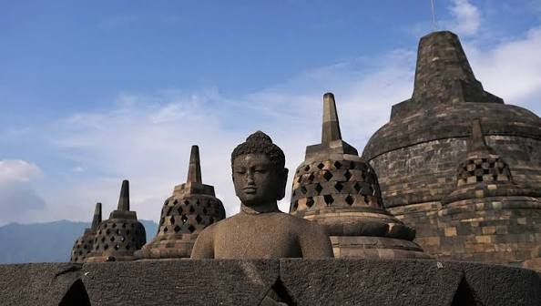

อาณาจักรศรีวิชัย

อาณาจักรศรีวิชัย (Srivijaya) คือมหาอำนาจทางทะเลอันยิ่งใหญ่และรุ่งเรืองที่สุดในภูมิภาคเอเชียตะวันออกเฉียงใต้ มีบทบาทสำคัญในหน้าประวัติศาสตร์ตั้งแต่พุทธศตวรรษที่ 12 ถึง 18 [1] ศูนย์กลางของอาณาจักรนี้สันนิษฐานว่าตั้งอยู่บริเวณเมืองปาเล็มบัง บนเกาะสุมาตรา ประเทศอินโดนีเซียในปัจจุบัน แต่มีขอบเขตอิทธิพลและเครือข่ายอำนาจแผ่ขยายกว้างไกล ครอบคลุมทั้งเกาะชวา คาบสมุทรมลายู ไปจนถึงดินแดนภาคใต้ของประเทศไทย (เช่น แคว้นตามพรลิงค์ หรือนครศรีธรรมราช และไชยา จังหวัดสุราษฎร์ธานี)